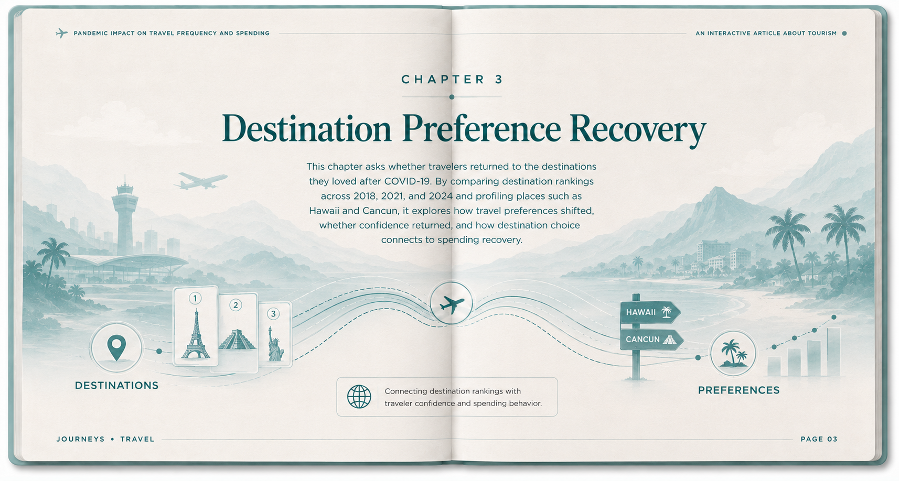

We begin with a global view of inbound tourism arrivals. The map gives a broad sense of how international travel changed before, during, and after the pandemic.
Use the year slider to compare 2018 and 2019 with the pandemic years. The darker teal countries, which represent higher arrival volumes, suddenly become much lighter in 2020 and 2021 as cross-border travel slowed around the world.
From 2022 to 2024, the darker colors gradually return. By 2024, many destinations appear close to their pre-pandemic levels, suggesting that global travel demand had largely recovered, though not evenly everywhere.
After the global overview, we shift attention to the United States, one of the world's largest travel markets and a major hub for international exchange. Looking at one country in detail helps make the pandemic's disruption more concrete.
Use the year slider in the upper right to follow the exact number of inbound travelers. Before the pandemic, U.S. arrivals were near their peak, reaching about 80 million visitors in 2019. In 2020, that number fell to only about 19 million.
This sharp drop shows how severely COVID-19 disrupted international movement. It reflects both a collapse in people's ability and willingness to travel, and the border controls and public-health restrictions that limited cross-border trips.
As the slider moves toward 2024, arrivals climb year by year and reach about 72 million. The United States had not fully returned to its pre-pandemic high, but it was once again operating in the same broad range.

Visitor counts are not the only way to measure whether tourism recovered. Spending matters too: it shows how much economic activity travel brought back to hotels, restaurants, transportation, attractions, and local businesses.
As one of the world's most economically active travel markets, the United States offers a useful snapshot of tourism spending before, during, and after COVID-19. The line chart compares total U.S. travel spending from 2019 to 2024.
Before the pandemic, spending reached a high level of about $1.41 trillion in 2019. In 2020, it fell by almost half, showing that the shock was not only about fewer travelers, but also about a much smaller tourism economy.
Over the next several years, spending rose steadily. By 2024, it reached about $1.23 trillion, still roughly 5% below the 2019 baseline but close enough to suggest that travel spending had returned to a similar overall scale.
Data: U.S. Travel Association
By 2024, tourism had broadly recovered, but not in the same way everywhere. Europe and the Middle East show some of the strongest rebounds, with many destinations exceeding pre-pandemic levels in both visitor recovery and tourism receipts. The Americas and Africa also returned close to or above baseline, while Asia-Pacific recovered more unevenly. The key takeaway is that post-pandemic tourism is not simply a return to normal: destinations are recovering at different speeds, and spending recovery does not always match visitor volume.
Data compiled from: World Bank international tourist arrivals World Bank international tourism receipts India Tourism Data Compendium 2025 and UN Tourism inbound tourism dashboard.

These three charts compare Hawaii and Cancun from three angles: air arrivals, hotel occupancy, and real spending per visitor. Together, they show how destination-level recovery can look similar in volume but different in traveler value.
As we saw earlier, visitor arrivals and hotel occupancy were highest before the pandemic, dropped sharply during COVID-19, and then recovered toward a level close to the pre-pandemic period. By 2024, both destinations were again attracting travelers and filling rooms at a much healthier pace.
The third chart tells a more complicated story. Real spending per visitor continues to decline, and by 2024 it is even lower than in 2021. Because this measure adjusts for inflation, it suggests that the actual purchasing power behind each trip has weakened: people may be traveling again, but they are not necessarily spending as much in real terms.
Across these chapters, the recovery story is not simply about returning to old numbers. Travel demand, hotel activity, and spending value recovered at different speeds. Even so, the broader direction remains hopeful: tourism is moving again, destinations are adapting, and people still want to see the world.
Data: Tourism Analytics Hawaii statistics and Tourism Analytics Cancun statistics